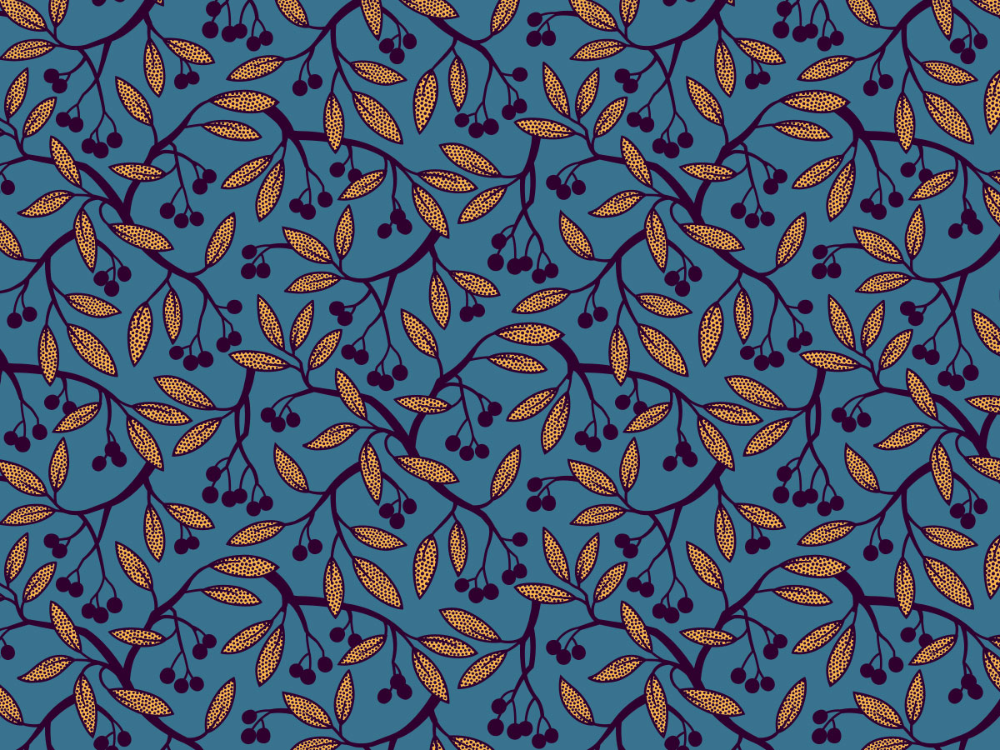

Растровое изображение — изображение, представляющее собой сетку пикселей — цветных точек (обычно прямоугольных) на мониторе, бумаге и других отображающих устройствах. Первые вычислительные машины не имели отдельных средств для работы с графикой, однако уже использовались для получения и обработки изображений. Программируя память первых электронных машин, построенную на основе запоминающих электронно-лучевых трубок, можно было получать растровое изображение. В 1961 году программист С. Рассел возглавил проект по созданию первой компьютерной игры с графикой. Создание игры «Spacewar» («Космические войны») заняло около 200 человеко-часов. Игра была создана на машине PDP-1. В 1963 году американский учёный Айвен Сазерленд создал программно-аппаратный комплекс Sketchpad, который позволял рисовать точки, линии и окружности на трубке цифровым пером. Поддерживались базовые действия с примитивами: перемещение, копирование и др. По сути, это был первый растровый редактор, реализованный на компьютере. Также программу можно назвать первым графическим интерфейсом, причём она являлась таковой ещё до появления самого термина. В середине 1960-х гг. появились разработки в промышленных приложениях компьютерной графики. Так, под руководством Т. Мофетта и Н. Тейлора фирма Itek разработала цифровую электронную чертёжную машину. В 1964 году General Motors представила систему автоматизированного проектирования DAC-1, разработанную совместно с IBM. В 1968 году группой под руководством Константинова Н. Н. была создана компьютерная математическая модель движения кошки. Машина БЭСМ-4, выполняя написанную программу решения дифференциальных уравнений, рисовала мультфильм «Кошечка», который для своего времени являлся прорывом. Для визуализации использовался алфавитно-цифровой принтер. Существенный прогресс компьютерная графика испытала с появлением возможности запоминать изображения и выводить их на компьютерном дисплее.